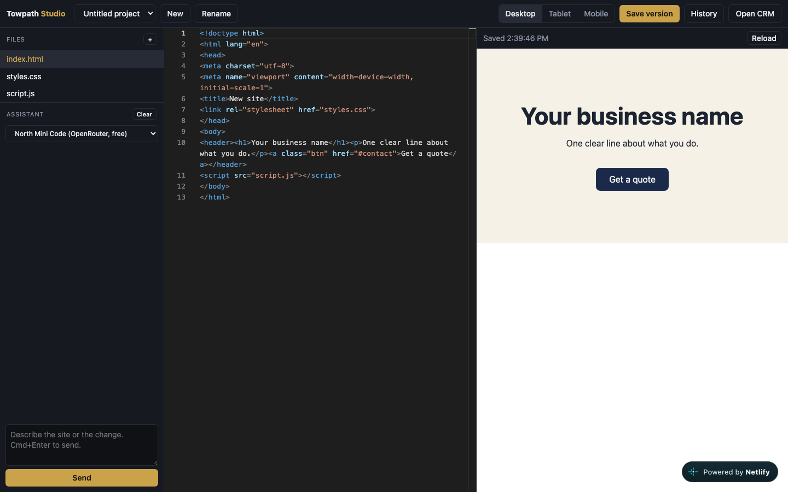

Towpath Studio, a site builder with an AI assistant.
A browser editor for building client and prospect sites fast: code, live preview, version history, and a chat that creates and edits files.

The problem
Prototyping a prospect's site meant juggling an editor, a browser, and an AI chat in three windows. I wanted one workspace with full code control and an assistant that edits the same files.
How it works
- Editor and preview. Monaco editor, a sandboxed iframe preview, and a Desktop, Tablet, Mobile switch.
- Projects and history. Multiple projects with saved versions, stored in the browser with one file to swap when a database is added.
- AI assistant. A chat panel with a model picker. The assistant creates and edits files in the open project.
- CRM link. Opens from a lead in the CRM with the business name prefilled.
Decisions that mattered
- Streaming needed an edge function. Standard serverless functions cut long responses at about 30 seconds, so chat runs on an edge function.
- Keys stay on the server. The browser never sees an API key. A server-side allowlist decides which models can be called, and a passphrase gates the chat.
- Chose models by testing. I ran the same prompt across free models. Two answered in 16 to 19 seconds, one took 83, and several timed out at 240. That is why the default is a fast free model with a paid option behind it.
- Held scope. A click-to-edit panel was on the plan. I cut it to ship the core tool first.
Limits
It is a private tool, not a product, and I have not tested it with prospects or other users. It was checked through direct API calls and the model comparison. Spend is capped by using free or low-cost models.
Outcome
Live since October 2026 at towpath-studio.netlify.app. It is built to turn a lead into a first prototype.
The code
A sanitized copy of this project is public. Client data, keys, and personal details are removed, and sample data stands in where the real data lived.